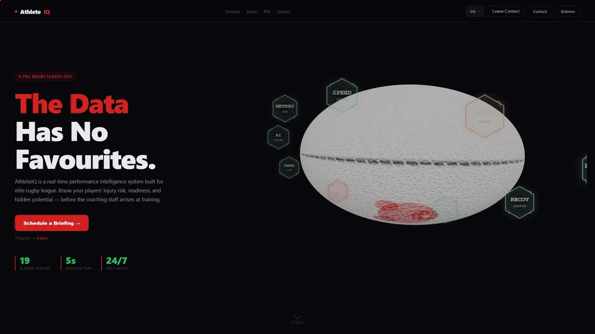
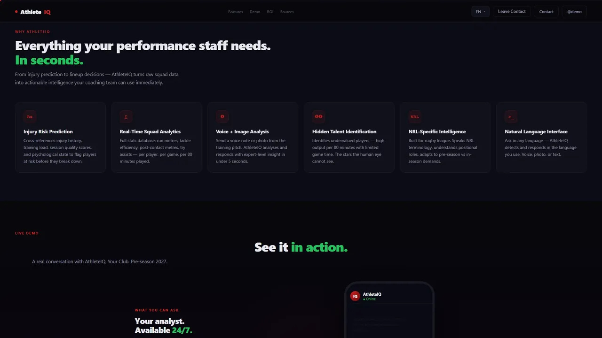
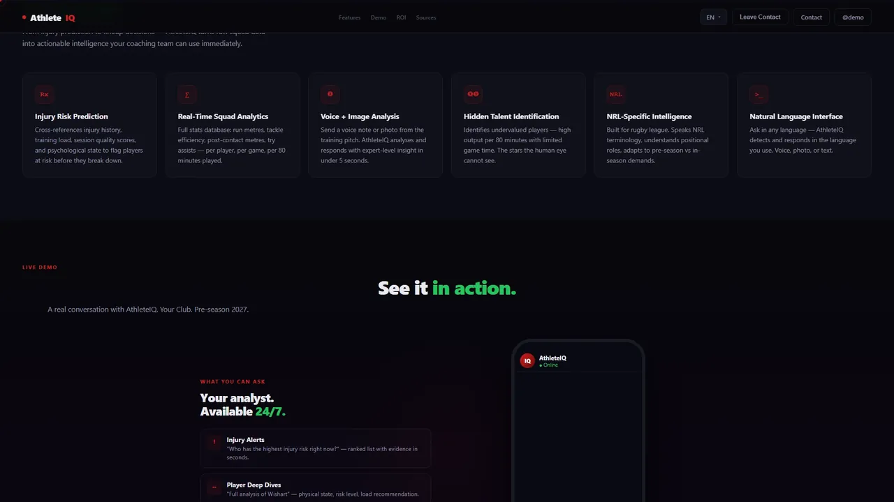

Lo que vi
El staff decide en el campo, con el teléfono en la mano.
Decidí
Bots de chat que responden en lenguaje natural.
Descarté
Un tablero web con filtros.
Porque Nadie abre un tablero entre dos ejercicios.
Caso de estudio


El cuerpo técnico tiene los datos repartidos: historial de lesiones, carga de entrenamiento, calidad de sesión, estado psicológico.
No puede consultarlos en segundos desde el campo, que es donde se decide.
El staff escribe como habla y recibe una lectura de los datos del plantel.
Consultas sobre riesgo de lesión, carga de entrenamiento, recuperación y talento del plantel.
Acepta notas de voz y fotos, además de texto.
Los bots responden en el idioma del usuario; la landing está en cinco.
Pelota de rugby 3D en tiempo real rodeada de métricas, y un chat de demostración.
El staff decide en el campo, con el teléfono en la mano.
Un tablero web con filtros.
Porque Nadie abre un tablero entre dos ejercicios.
Un cuerpo técnico internacional no trabaja en un solo idioma.
Sólo inglés.
Porque La pregunta tiene que salir como se piensa, sin traducir.
Sin contrato, un nombre ajeno o una cifra supuesta se leen como promesa.
Publicar la versión atada a un club real.
Porque Lo que no está medido no se muestra como resultado.
Primero el mensaje («The Data Has No Favourites») y las preguntas que el staff haría de verdad; después las pantallas.
Oscura, con la pelota 3D y las métricas en hexágonos; cinco idiomas por diccionario.
Responden por texto, voz y foto, en el idioma del usuario, sobre el plantel.
Landing capturada a 1920×1080; bots probados por texto, voz y foto.
Para publicarla saqué el club real, los jugadores, los accesos a los bots y las cifras supuestas; la demo de este sitio es esa copia saneada.
Landing y bots funcionando como demo; la landing se puede abrir desde este caso.
Sin clientes ni contratos. Ninguna cifra de retorno ni de jugadores: eran supuestos de la demo y no se publican.
Lo que cambiaría: armarla genérica desde el principio; atarla a un club real me obligó a sanearla para poder mostrarla.
Lo que falta, y es lo más importante: validarla con un club.
Capturas de la demo con un club genérico y jugadores ficticios.



Contacto
Respondo en el día.